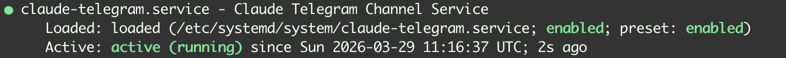

Table of Contents
Also, pass auf: Vor ein paar Tagen habe ich ja Claude Channels eingerichtet. Ich kann nun also per Telegramm mit Claude reden und programmieren. Aber da geht noch mehr! Erstmal bauen wir uns einen kleinen Wissenspeicher auf, mit dem Claude interagieren kann und dann lassen wir Claude noch einen Skill bauen, um Ereignisse im Google Kalender zu erstellen. Und Zack-Fertig ist unserer kleiner KI-Assistent… also im Prinzip OpenClaw - nur eben selbst gebaut.
Kurz die Funkionsweise:
- wir nutzen Obsidian als Wissenspeicher, der Sync über verschiedne Geräte hinweg ermöglicht OneDrive
- Claude läuft als Service im Hintergrund und übernimmt die Organisation
- über einen Messenger wie Telegram geben wir Claude Anweisungen und können natürlich auch auf die Daten zugreifen
- Claude kann eigenständig Kalendar-Einträge erstellen, auf die wir mit unserem Google Assistenten Zugriff haben
Kurzer Einwurf zu 4: Es gibt durchaus andere Möglichkeiten, wie z.B. Home Assistant auf dem NAS oder Tasker auf dem Handy, um mit Telegram um damit Claude zu kommunizieren. Das Problem ist dieses: Abgesehen davon, dass der Google Assistent/Google Home ein ziemliches Labyrinth von Einstellungen ist, sind die Möglichkeiten auch stark eingeschränkt. So schlau ist der ganze Kram nämlich leider nicht. Du kannst damit zwar Lampen steuern, die WLAN-Jalousie hochfahren oder Nachrichten abzuspielen - und da endet es dann auch. Ich habe lange rumgebastelt und z.B. probiert, Tasker-Ereignisse aufzurufen. Ohne Erfolg. Deswegen der “Umweg” über den Kalendar, der ja auch irgendwie ganz charmant ist.
Obligatorische Warnung
BPf - Backup & Privacy first. Du lässt einen KI-Agenten im Hintergrund permanent aktiv laufen und gibst Zugriff auf die Dateien in dem entsprechenden Verzeichnis. Sei dir bewusst, dass alle informationen mit dem Anbieter des KI-Agenten geteilt werden. Ist dir das zu viel, nutze einen lokalen Ollama-Server, der allerdings entsprechende Hardware-Ressourcen benötigt.
Der Wissenspeicher
Ich nutze Obsidian als Wissensspeicher. Vorteil: Markdown-Dateien lassen sich ohne spezielles Zubehör von überall aus bearbeiten, über Frontmatter kannst du bequem Metadaten pflegen.
Die Synchronisierung läuft über die Erweiterung “Remotely Save” (alternativ wäre auch eine Kombination aus Tailscale und CouchDB denkbar, das ist aber etwas instabiler und öffnet mit Tailscale das NAS in das Internet - wenn auch “nur” als VPN. Also nutze ich einfach die vorhandene OneDrive-Infrastruktur Mit CouchDB verliere ich außerdem den Markdown-Vorteil.)
Auf dem NAS nutze ich den OneDrive-client von abraunegg . Der läuft zuverlässig im Hintergrund.
Damit steht der Wissenspeicher und ist überall verfügbar: Smartphone <-> PC oder MacBook <-> NAS.
Die KI
Claude läuft als CLI-App und systemd-Service auf dem NAS. Das ist ein bisschen kompliziert, weil die CLI-App interaktiv ist und auf deine Eingaben wartet, selbst wenn diese über einen Channel wie Telegram oder Slack kommen. Wir nutzen tmux um das zu umgehen (Wenn noch nicht vorhanden, dann mit sudo apt update && sudo apt install tmux -y) installieren.
Bevor wir loslegen, muss die Verbindung mit deinem Channel, wie Telegram, Slack oder Discord, stehen. Wie das funktioniert, habe ich hier beschrieben . Achte darau, das System schon in dem Ordner einzurichten, der auch deinen Obsidian-Wissensspeicher enthält, damit die Berechtigungen für den Zugriff auf die Dateien stimmen.
1sudo nano /etc/systemd/system/claude-telegram.service
Und jetzt sagen wir dem Service, dass er Claude’s Haiku in dem Obsidian-Verzeichnis starten soll. Die Executable von Claude findest du über which claude heraus. Wichtig ist hier, Claude den Zugriff auf Bun zu ermöglichen, da darüber der MCP-Server läuft.
1[Unit]
2Description=Claude Telegram Channel Service
3After=network.target
4
5[Service]
6User=ICKE_ODER_WER_SONST
7Type=forking
8WorkingDirectory=/dein-one-drive-pfad/obsidian
9Environment=PATH=/home/ICKE_ODER_WER_SONST/.bun/bin:/home/ICKE_ODER_WER_SONST/.local/bin:/usr/local/bin:/usr/bin:/bin
10Environment=HOME=/home/ICKE_ODER_WER_SONST
11ExecStart=/usr/bin/tmux new-session -d -s claude-bot '/home/ICKE_ODER_WER_SONST/.local/bin/claude --channels plugin:telegram@claude-plugins-official --model haiku'
12ExecStop=/usr/bin/tmux kill-session -t claude-bot
13Restart=always
14RestartSec=10
15StandardOutput=journal
16StandardError=journal
17
18[Install]
19WantedBy=multi-user.target
Abschließend startest du den Service einmal und prüfst, ob er läuft:
1sudo systemctl daemon-reload
2sudo systemctl enable claude-telegram.service
3sudo systemctl start claude-telegram.service
4journalctl -u claude-telegram.service -f
Am Ende sollte das in etwa so aussehen:


Oder wenn du den Status des Services mit sudo systemctl status claude-telegram.service abfragst:
Wie du mit tmux arbeitest:
Wenn du wissen willst, was innerhalb der tmux-Session passiert, dann nimm diesen Befehl:
1watch -n 1 "tmux capture-pane -pt claude-bot"
Du kannst dich auch direkt in die Session einklinken - das ist wichtig, wenn Claude zusätzliche Berechtigungen benötigt:
1tmux attach -t claude-bot
Und so beendest du die Session von außerhalb:
1/usr/bin/tmux kill-session -t claude-bot
(Aber Achtung - der Systemd-Service wird die Session sofort wieder starten, weil wir ja Restart=always eingestellt haben.)
Mit der KI sprechen?
Du kannst nun zwar per Text-Nachricht mit Claude kommunizieren. Aber so richtig Spaß macht es erst, wenn du auch per Spracheingabe Befehle übermittelnt kannst. Im Prinzip kann Claude dir das nötige Script dazu selber schreiben, dafür ist es ja gedacht. Du benötigst nur ein paar Abghängigkeiten, wie ffmpeg oder whisper von OpenAI, um die Audiodateien zu konvertieren. Claude führt dich da durch und schreibt dann z.B. ein kleines Python-Script - weshalb ich das hier nicht weiter ausführe. Nutze die Macht deines KI-Butlers.
Zack-Fertig?
Wenn du alles korrekt eingerichtet hast, kannst du jetzt über deinen Messenger mit Claude reden und hast schon direkt Zugriff auf deine Wissensdatenbank - lesend und schreibend. Weiter gehts mit der Anbindung an Kalender…
Google Kalender
…und auch das werde ich im Detail nicht weiter ausführen. Denn Claude kann dir hier nicht nur den Python-Wrapper bauen sondern auch den Skill erstellen. Es geht hier also nur um die Architektur. Die Programmierung - willkommen in 2026 - übernimmt die KI und Claude kann das eigentlich ganz gut.
Du benötigst dafür nur einen OAuth-Zugang zur Calendar-API und das bekommst du hier: https://console.cloud.google.com/
- Projekt erstellen
- Calendar-API aktivieren: APIs & Dienste -> Bibliothek -> Calendar API -> Aktivieren
- APIs & Dienste -> Anmeldedaten -> Anmeldedaten erstellen -> OAuth-Client-ID -> Desktop-App -> Erstellen (du musst ggf. vorher einen Consent-Screen einrichten, das ist aber selbsterklärend)
- Claude bzw. der Python-Wrapper benötigt die
client_secret.jsonund kann dann die Authenfizierung übernehmen um ein Token zu erstellen - beide Dateien sollten nicht im Obsiadian-Verzeichnis liegen, damit sie nicht mitgesynct werden. Nutze z.B.~/.claude/gcal.
Dann lässt du Claude einen eigenen Skill entwerfen, der den Python-Wrapper nutzt um auf den Kalender zuzugreifen. Claude wird dafür vermutlich so etwas wie ~/.claude/skills/calendar.md erstellen. Du solltest dir die Datei vorher einmal anschauen und nach deinen Bedürfnissen einrichten.
Fazit
Fertig - du hast deinen eigenen kleinen KI-Agent-Assistenten gebaut! Könntest du nicht einfach OpenClaw nutzen? Klar - der ist sicherlich auchh weitaus mächtiger - aber eben das ist das Problem: Für meine Zwecke ist das zuviel und vor allem zu undurchsichtig. Das Setup hier ist klein genug, um zu sehen was passiert. Und außerdem ging es natürlich auch ein bisschen darum, das selber zu bauen.